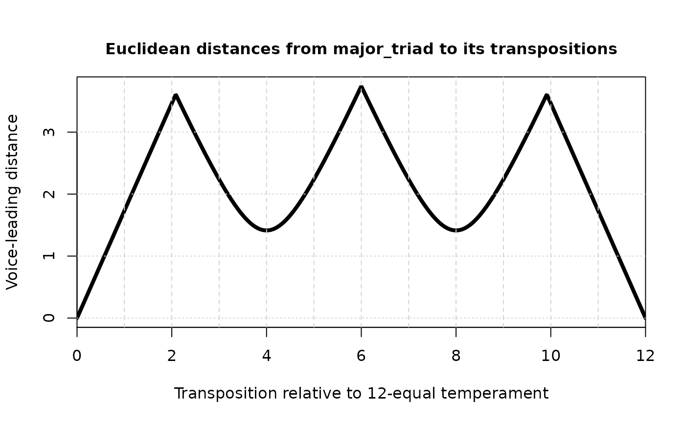

One way to think about the voice-leading potential of a set is to consider the minimal voice-leadings by which it can move to transpositions of itself (or another set). For instance, the major triad's closest transpositions are \(T_4\) and \(T_8\) while its most distant transposition is \(T_6\), and potentially also \(T_{\pm 2}\) depending on the distance metric you use. For the major triad restricted to 12-tone equal temperament, this set of relationships is well modeled by Richard Cohn's discussion of Douthett & Steinbach's "Cube Dance" in Audacious Euphony (102-106). The behavior of other sets is not always what you might expect extrapolating from the case of tertian sonorities. For instance, the trichord (027) has different minimal neighbors depending on the metric chosen: its nearest neighbors are \(T_{\pm 4}\) under the Euclidean metric but \(T_{\pm 5}\) under the taxicab metric.
This function allows us to visualize such relationships by plotting the minimal voice leading
distance from a set to transpositions of its goal in continuous pc-space. (In spirit, it is like
a continuous version of vl_rolodex() except that it visualizes a voice-leading distance rather than
reporting the specific motions of the set's individual voices.) The main intended use of the function
is the plot that it produces, which represents many discrete \(T_n\)s of the set (for a sampling of
each edo step divided into subdivide amounts) on the x axis and voice-leading distance on the y
axis. Secondarily, tndists() invisibly returns the distance values that it plots, named
according to the \(T_n\) they correspond to.
Usage
tndists(
set,
goal = NULL,
method = c("taxicab", "euclidean", "chebyshev", "hamming"),
subdivide = 100,
edo = 12,
rounder = 10
)Arguments
- set
Numeric vector of pitch-classes in the set
- goal
Numeric vector like set: what is the tn-type of the voice leading's destination? Defaults to
NULL, in which case the function usessetas the tn-type.- method
What distance metric should be used? Defaults to
"taxicab"but can be"euclidean","chebyshev", or"hamming".- subdivide
Numeric: how many small amounts should each
edostep be divided into? Defaults to100.- edo
Number of unit steps in an octave. Defaults to
12.- rounder
Numeric (expected integer), defaults to
10: number of decimal places to round to when testing for equality.
Value
Numeric vector of length edo * subdivide representing distances of the transpositions. Names
indicate the transposition index that corresponds to each distance.
Examples
major_triad <- c(0, 4, 7)
taxicab_dists <- tndists(major_triad)
euclidean_dists <- tndists(major_triad, method="euclidean")

tns_to_display <- c("1.9", "1.92", "1.95", "2", "2.05", "2.08", "2.1")
taxicab_dists[tns_to_display]
#> 1.9 1.92 1.95 2 2.05 2.08 2.1
#> 5.70 5.76 5.85 6.00 5.85 5.76 5.70
euclidean_dists[tns_to_display]
#> 1.9 1.92 1.95 2 2.05 2.08 2.1
#> 3.290897 3.325538 3.377499 3.464102 3.550704 3.602666 3.581899